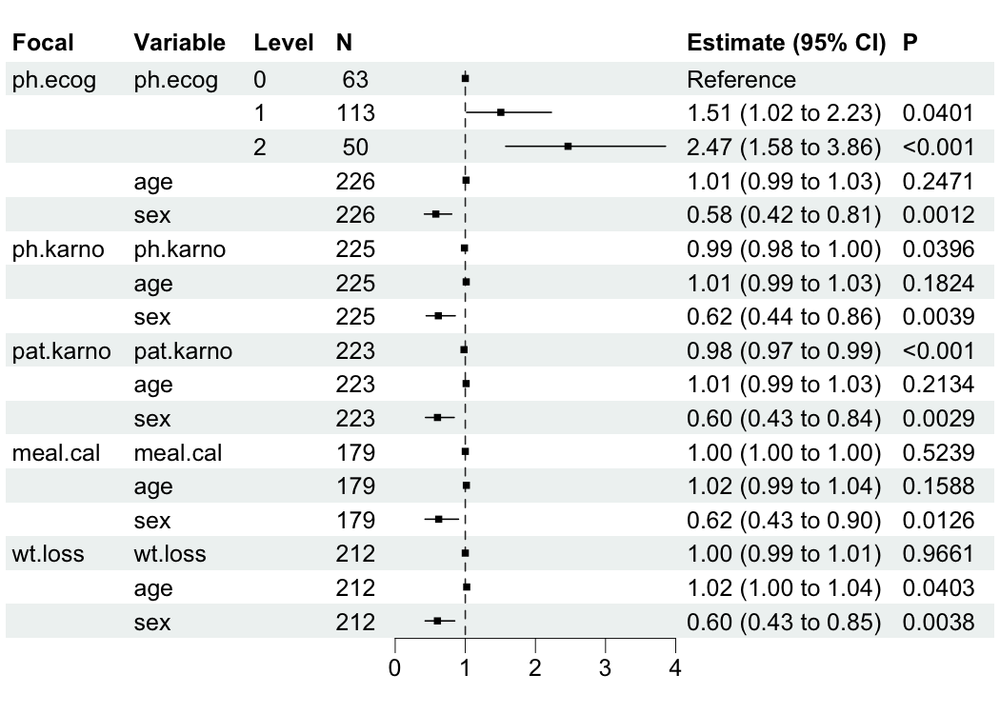
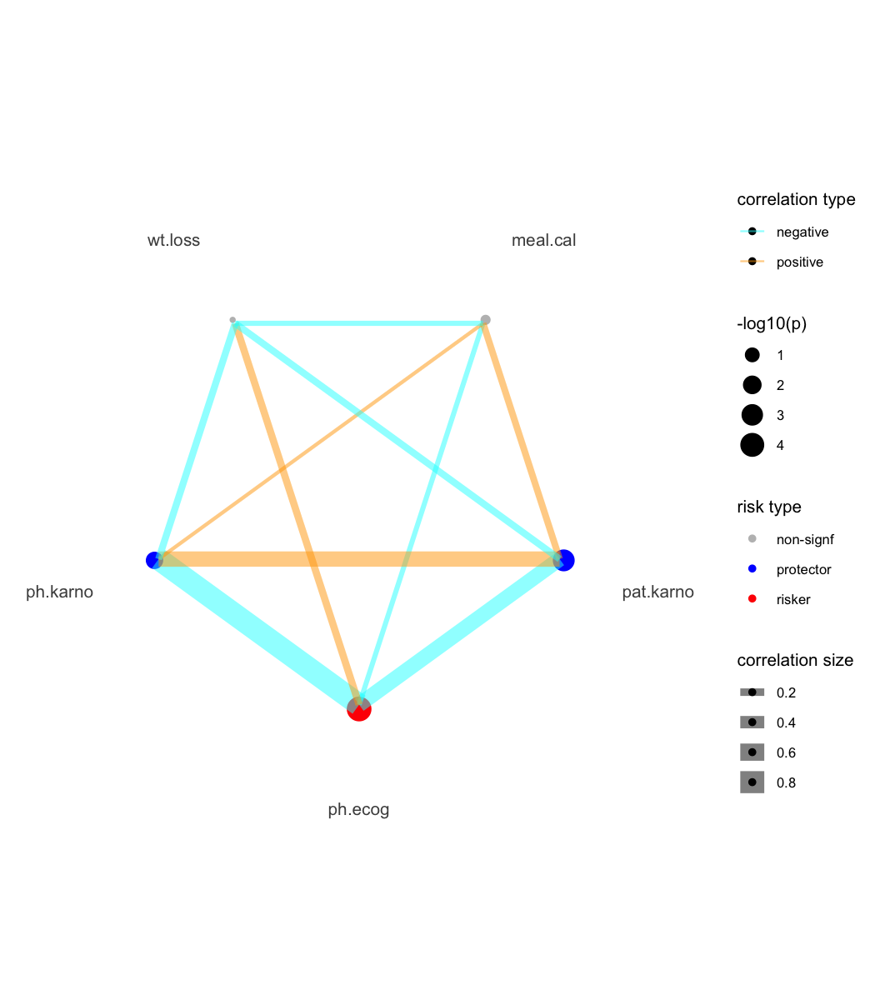

The bregr package revolutionizes batch regression modeling in R, enabling you to run hundreds of models simultaneously with a clean, intuitive workflow. Designed for both univariate and multivariate analyses, it delivers tidy-formatted results and publication-ready visualizations, transforming cumbersome statistical workflows into efficient pipelines.
Key Features
- üöÄ Batch Processing: Automate regression modeling across multiple dependent/independent variables.
- üìä Tidy Output: Structured results compatible with
tidyversefor seamless downstream analysis. - üìà Integrated Visualization: One-command forest plots and model diagnostics.
- ⚡️ Unified Workflow: Chain operations with native R pipes (
|>). - üì¶ Model Agnostic: Supports linear models, Cox regression, and more.
Batch Regression Modeling Overview
Batch regression streamlines analyses where:
- Each model shares identical control variables (, , …).
- Focal predictors (, , …) or response variables (, , …) vary systematically.
A simplified overview of batch regression modeling is given below for illustration:

Installation
You can install the stable version of bregr from CRAN with:
install.packages("bregr")Alternatively, install the development version from r-universe with:
install.packages('bregr', repos = c('https://wanglabcsu.r-universe.dev', 'https://cloud.r-project.org'))or from GitHub with:
#install.packages("remotes")
remotes::install_github("WangLabCSU/bregr")Usage
Load package(s):
library(bregr)
#> Welcome to 'bregr' package!
#> =======================================================================
#> You are using bregr version 1.1.0.9000
#>
#> Project home : https://github.com/WangLabCSU/bregr
#> Documentation: https://wanglabcsu.github.io/bregr/
#> Cite as : arXiv:2110.14232
#> =======================================================================
#> Load data:
bregr is designed and implemented following Tidy design principles and Tidyverse style guide, making it intuitive and user-friendly.
Core workflow
Define and construct batch models:
mds <- breg(lung) |> # Init breg object
br_set_y(c("time", "status")) |> # Survival outcomes
br_set_x(colnames(lung)[6:10]) |> # Focal predictors
br_set_x2(c("age", "sex")) |> # Controls
br_set_model("coxph") |> # Cox Proportional Hazards
br_run() # Execute models
#> exponentiate estimates of model(s) constructed from coxph method at defaultOne-Step Pipeline
mds <- br_pipeline(
lung,
y = c("time", "status"),
x = colnames(lung)[6:10],
x2 = c("age", "sex"),
method = "coxph"
)Run in parallel:
mds_p <- br_pipeline(
lung,
y = c("time", "status"),
x = colnames(lung)[6:10],
x2 = c("age", "sex"),
method = "coxph",
n_workers = 3
)
#> exponentiate estimates of model(s) constructed from coxph method at default
#> ■■■■■■■ 20% | ETA: 46s
#>
all.equal(mds, mds_p)
#> [1] TRUETwo global options have been introduced to control whether models are saved as local files (bregr.save_model, default is FALSE) and where they should be saved (bregr.path, default uses a temporary path).
Output Inspection
Use br_get_*() function family to access attributes and data of result breg object.
br_get_models(mds) # Raw model objects
#> $ph.ecog
#> Call:
#> survival::coxph(formula = survival::Surv(time, status) ~ ph.ecog +
#> age + sex, data = data)
#>
#> coef exp(coef) se(coef) z p
#> ph.ecog1 0.409836 1.506571 0.199606 2.053 0.04005
#> ph.ecog2 0.902321 2.465318 0.228092 3.956 7.62e-05
#> age 0.010777 1.010836 0.009312 1.157 0.24713
#> sex -0.545631 0.579476 0.168229 -3.243 0.00118
#>
#> Likelihood ratio test=28.94 on 4 df, p=8.052e-06
#> n= 226, number of events= 163
#>
#> $ph.karno
#> Call:
#> survival::coxph(formula = survival::Surv(time, status) ~ ph.karno +
#> age + sex, data = data)
#>
#> coef exp(coef) se(coef) z p
#> ph.karno -0.012238 0.987837 0.005946 -2.058 0.03957
#> age 0.012615 1.012695 0.009462 1.333 0.18244
#> sex -0.485116 0.615626 0.168170 -2.885 0.00392
#>
#> Likelihood ratio test=17.21 on 3 df, p=0.0006413
#> n= 225, number of events= 162
#> (1 observation deleted due to missingness)
#>
#> $pat.karno
#> Call:
#> survival::coxph(formula = survival::Surv(time, status) ~ pat.karno +
#> age + sex, data = data)
#>
#> coef exp(coef) se(coef) z p
#> pat.karno -0.018736 0.981439 0.005676 -3.301 0.000964
#> age 0.011672 1.011740 0.009381 1.244 0.213436
#> sex -0.505205 0.603382 0.169452 -2.981 0.002869
#>
#> Likelihood ratio test=23.07 on 3 df, p=3.896e-05
#> n= 223, number of events= 160
#> (3 observations deleted due to missingness)
#>
#> $meal.cal
#> Call:
#> survival::coxph(formula = survival::Surv(time, status) ~ meal.cal +
#> age + sex, data = data)
#>
#> coef exp(coef) se(coef) z p
#> meal.cal -0.0001535 0.9998465 0.0002409 -0.637 0.5239
#> age 0.0149375 1.0150496 0.0106016 1.409 0.1588
#> sex -0.4775830 0.6202808 0.1914559 -2.494 0.0126
#>
#> Likelihood ratio test=10.1 on 3 df, p=0.0177
#> n= 179, number of events= 132
#> (47 observations deleted due to missingness)
#>
#> $wt.loss
#> Call:
#> survival::coxph(formula = survival::Surv(time, status) ~ wt.loss +
#> age + sex, data = data)
#>
#> coef exp(coef) se(coef) z p
#> wt.loss -0.0002676 0.9997324 0.0062908 -0.043 0.96607
#> age 0.0199314 1.0201314 0.0097178 2.051 0.04027
#> sex -0.5067253 0.6024652 0.1748697 -2.898 0.00376
#>
#> Likelihood ratio test=13.87 on 3 df, p=0.003086
#> n= 212, number of events= 150
#> (14 observations deleted due to missingness)
br_get_results(mds) # Comprehensive estimates
#> # A tibble: 17 × 21
#> Focal_variable term variable var_label var_class var_type var_nlevels
#> <chr> <chr> <chr> <chr> <chr> <chr> <int>
#> 1 ph.ecog ph.ecog0 ph.ecog ph.ecog factor categoric… 3
#> 2 ph.ecog ph.ecog1 ph.ecog ph.ecog factor categoric… 3
#> 3 ph.ecog ph.ecog2 ph.ecog ph.ecog factor categoric… 3
#> 4 ph.ecog age age age numeric continuous NA
#> 5 ph.ecog sex sex sex numeric continuous NA
#> 6 ph.karno ph.karno ph.karno ph.karno numeric continuous NA
#> 7 ph.karno age age age numeric continuous NA
#> 8 ph.karno sex sex sex numeric continuous NA
#> 9 pat.karno pat.karno pat.karno pat.karno numeric continuous NA
#> 10 pat.karno age age age numeric continuous NA
#> 11 pat.karno sex sex sex numeric continuous NA
#> 12 meal.cal meal.cal meal.cal meal.cal numeric continuous NA
#> 13 meal.cal age age age numeric continuous NA
#> 14 meal.cal sex sex sex numeric continuous NA
#> 15 wt.loss wt.loss wt.loss wt.loss numeric continuous NA
#> 16 wt.loss age age age numeric continuous NA
#> 17 wt.loss sex sex sex numeric continuous NA
#> # ℹ 14 more variables: contrasts <chr>, contrasts_type <chr>,
#> # reference_row <lgl>, label <chr>, n_obs <dbl>, n_ind <dbl>, n_event <dbl>,
#> # exposure <dbl>, estimate <dbl>, std.error <dbl>, statistic <dbl>,
#> # p.value <dbl>, conf.low <dbl>, conf.high <dbl>
br_get_results(mds, tidy = TRUE) # Tidy-formatted coefficients
#> # A tibble: 16 × 8
#> Focal_variable term estimate std.error statistic p.value conf.low conf.high
#> <chr> <chr> <dbl> <dbl> <dbl> <dbl> <dbl> <dbl>
#> 1 ph.ecog ph.ec… 1.51 0.200 2.05 4.01e-2 1.02 2.23
#> 2 ph.ecog ph.ec… 2.47 0.228 3.96 7.62e-5 1.58 3.86
#> 3 ph.ecog age 1.01 0.00931 1.16 2.47e-1 0.993 1.03
#> 4 ph.ecog sex 0.579 0.168 -3.24 1.18e-3 0.417 0.806
#> 5 ph.karno ph.ka… 0.988 0.00595 -2.06 3.96e-2 0.976 0.999
#> 6 ph.karno age 1.01 0.00946 1.33 1.82e-1 0.994 1.03
#> 7 ph.karno sex 0.616 0.168 -2.88 3.92e-3 0.443 0.856
#> 8 pat.karno pat.k… 0.981 0.00568 -3.30 9.64e-4 0.971 0.992
#> 9 pat.karno age 1.01 0.00938 1.24 2.13e-1 0.993 1.03
#> 10 pat.karno sex 0.603 0.169 -2.98 2.87e-3 0.433 0.841
#> 11 meal.cal meal.… 1.000 0.000241 -0.637 5.24e-1 0.999 1.00
#> 12 meal.cal age 1.02 0.0106 1.41 1.59e-1 0.994 1.04
#> 13 meal.cal sex 0.620 0.191 -2.49 1.26e-2 0.426 0.903
#> 14 wt.loss wt.lo… 1.000 0.00629 -0.0425 9.66e-1 0.987 1.01
#> 15 wt.loss age 1.02 0.00972 2.05 4.03e-2 1.00 1.04
#> 16 wt.loss sex 0.602 0.175 -2.90 3.76e-3 0.428 0.849Visualization
Forest Plot (Key Results)
bregr mainly provides br_show_forest() for plotting data table of modeling results.
br_show_forest(mds)
We can tune the plot to only keep focal variables and adjust the limits of x axis.
br_show_forest(
mds,
rm_controls = TRUE, # Focus on focal predictors
xlim = c(0, 3), # Custom axis scaling
# Use x_trans = "log" to transform the axis
# Use log_first = TRUE to transform both
# the axis and estimate table
drop = 1 # Remove redundant columns
)We also provide some interfaces from other packages for plotting constructed model(s), e.g., br_show_forest_ggstats(), br_show_forest_ggstatsplot(), br_show_fitted_line(), and br_show_fitted_line_2d().
For Cox-PH modeling results (focal variables must be continuous type), we provide a risk network plotting function.
mds2 <- br_pipeline(
survival::lung,
y = c("time", "status"),
x = colnames(survival::lung)[6:10],
x2 = c("age", "sex"),
method = "coxph"
)
#> exponentiate estimates of model(s) constructed from coxph method at default
br_show_risk_network(mds2)
#> please note only continuous focal terms analyzed and visualized
Model Score Prediction and Survival Curves
For Cox-PH models, you can generate model predictions (risk scores) and create survival curves grouped by these scores:
# Generate model predictions
scores <- br_predict(mds2, idx = "ph.ecog")
#> `type` is not specified, use lp for the model
#> Warning: some predictions are NA, consider checking your data for missing
#> values
head(scores)
#> 1 2 3 4 5 6
#> 0.3692998 -0.1608293 -0.2936304 0.1811648 -0.2493634 0.3692998
# Create survival curves based on model scores
br_show_survival_curves(
mds2,
idx = "ph.ecog",
n_groups = 3,
title = "Survival Curves by 'ph.ecog' Model Risk Score"
)
#> Warning: some predictions are NA, consider checking your data for missing
#> valuesTable
Show tidy table result as pretty table:
br_show_table(mds)
#> Focal_variable term estimate std.error statistic p.value conf.int
#> 1 ph.ecog ph.ecog1 1.51 0.20 2.05 0.040 [1.02, 2.23]
#> 2 ph.ecog ph.ecog2 2.47 0.23 3.96 < .001 [1.58, 3.86]
#> 3 ph.ecog age 1.01 9.31e-03 1.16 0.247 [0.99, 1.03]
#> 4 ph.ecog sex 0.58 0.17 -3.24 0.001 [0.42, 0.81]
#> 5 ph.karno ph.karno 0.99 5.95e-03 -2.06 0.040 [0.98, 1.00]
#> 6 ph.karno age 1.01 9.46e-03 1.33 0.182 [0.99, 1.03]
#> 7 ph.karno sex 0.62 0.17 -2.88 0.004 [0.44, 0.86]
#> 8 pat.karno pat.karno 0.98 5.68e-03 -3.30 < .001 [0.97, 0.99]
#> 9 pat.karno age 1.01 9.38e-03 1.24 0.213 [0.99, 1.03]
#> 10 pat.karno sex 0.60 0.17 -2.98 0.003 [0.43, 0.84]
#> 11 meal.cal meal.cal 1.00 2.41e-04 -0.64 0.524 [1.00, 1.00]
#> 12 meal.cal age 1.02 0.01 1.41 0.159 [0.99, 1.04]
#> 13 meal.cal sex 0.62 0.19 -2.49 0.013 [0.43, 0.90]
#> 14 wt.loss wt.loss 1.00 6.29e-03 -0.04 0.966 [0.99, 1.01]
#> 15 wt.loss age 1.02 9.72e-03 2.05 0.040 [1.00, 1.04]
#> 16 wt.loss sex 0.60 0.17 -2.90 0.004 [0.43, 0.85]As markdown table:
br_show_table(mds, export = TRUE)
#> Focal_variable | term | estimate | std.error | statistic | p.value | conf.int
#> --------------------------------------------------------------------------------------
#> ph.ecog | ph.ecog1 | 1.51 | 0.20 | 2.05 | 0.040 | [1.02, 2.23]
#> ph.ecog | ph.ecog2 | 2.47 | 0.23 | 3.96 | < .001 | [1.58, 3.86]
#> ph.ecog | age | 1.01 | 9.31e-03 | 1.16 | 0.247 | [0.99, 1.03]
#> ph.ecog | sex | 0.58 | 0.17 | -3.24 | 0.001 | [0.42, 0.81]
#> ph.karno | ph.karno | 0.99 | 5.95e-03 | -2.06 | 0.040 | [0.98, 1.00]
#> ph.karno | age | 1.01 | 9.46e-03 | 1.33 | 0.182 | [0.99, 1.03]
#> ph.karno | sex | 0.62 | 0.17 | -2.88 | 0.004 | [0.44, 0.86]
#> pat.karno | pat.karno | 0.98 | 5.68e-03 | -3.30 | < .001 | [0.97, 0.99]
#> pat.karno | age | 1.01 | 9.38e-03 | 1.24 | 0.213 | [0.99, 1.03]
#> pat.karno | sex | 0.60 | 0.17 | -2.98 | 0.003 | [0.43, 0.84]
#> meal.cal | meal.cal | 1.00 | 2.41e-04 | -0.64 | 0.524 | [1.00, 1.00]
#> meal.cal | age | 1.02 | 0.01 | 1.41 | 0.159 | [0.99, 1.04]
#> meal.cal | sex | 0.62 | 0.19 | -2.49 | 0.013 | [0.43, 0.90]
#> wt.loss | wt.loss | 1.00 | 6.29e-03 | -0.04 | 0.966 | [0.99, 1.01]
#> wt.loss | age | 1.02 | 9.72e-03 | 2.05 | 0.040 | [1.00, 1.04]
#> wt.loss | sex | 0.60 | 0.17 | -2.90 | 0.004 | [0.43, 0.85]As HTML table:
br_show_table(mds, export = TRUE, args_table_export = list(format = "html"))Documentation
All functions are documented in the package reference, with full documentation available on the package site.
Coverage
covr::package_coverage()
#> bregr Coverage: 70.35%
#> R/98-utils.R: 58.17%
#> R/07-diagnostics.R: 63.41%
#> R/06-avail.R: 66.07%
#> R/04-show.R: 66.80%
#> R/04-show-nomogram-helpers.R: 68.59%
#> R/03-accessors.R: 75.31%
#> R/02-pipeline.R: 77.36%
#> R/01-class.R: 90.70%
#> R/99-zzz.R: 90.91%
#> R/05-polar.R: 92.37%